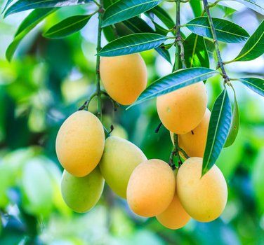
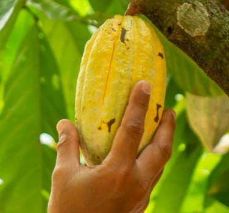
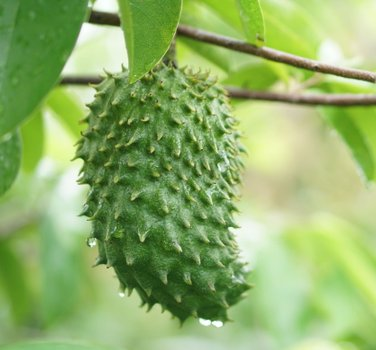

As meat consumption reduces and the availability of plant-based foods rises at a staggering rate, the diet choices made by the public is rapidly changing (recent statistics show that the amount of vegetarians and vegans in the UK is at an all-time high). Our diverse population is creating a new demand for healthy and alternative produce. To illustrate this, a regular customer said: "Friends of mine that eat meat purchase a sirloin steak or tiger prawns as a luxury for dinner at the weekend. As a vegan, I treat myself to some hand-selected and tree-ripened organic mangoes and, occasionally, a whole jackfruit!" Cameron, London
While most of our fruits are suitable to be eaten neat out of your hand, the flavour and enjoyment of some can be improved if they are prepared in a certain way or mixed with other complementary flavours. Some of our dried fruits can simply be steeped in hot water to create delicious medicinal teas or mixed into the dough of baking creations. The frozen pulps of our fruits are perfect to be mixed with milk or water. Our delicious fruits are used by some of the world’s top chefs to create gourmet recipes.
Tree-dropped monthong (golden pillow) durian from Thailand
Marian plum, also known as a 'plum mango'
In our Online Shop you will find a wide selection of exotic fruit, freshly picked and transported to us from around the globe within days. Ultimately arriving in perfect condition at your UK address. Purchasing is simple. The exotic fruits are available individually, in small multipacks, selection boxes or gift baskets. If it suits you better, you can order by phone or email.
We work closely with our suppliers, building an extensive knowledge of these rare and hard-to-obtain fruits. We are always looking to discover new and exciting fruits and are regularly updating our range, working hard to source organically. We have a wide range of customers buying our fruits for many reasons, the health benefits and culinary uses being the main motivation.
A plump red dragonfruit in Binh Thuan Province, Vietnam
A cacao pod – the fruit of the theobroma cacao tree
Soursop (guyabano) growing in an orchard in the Philippines